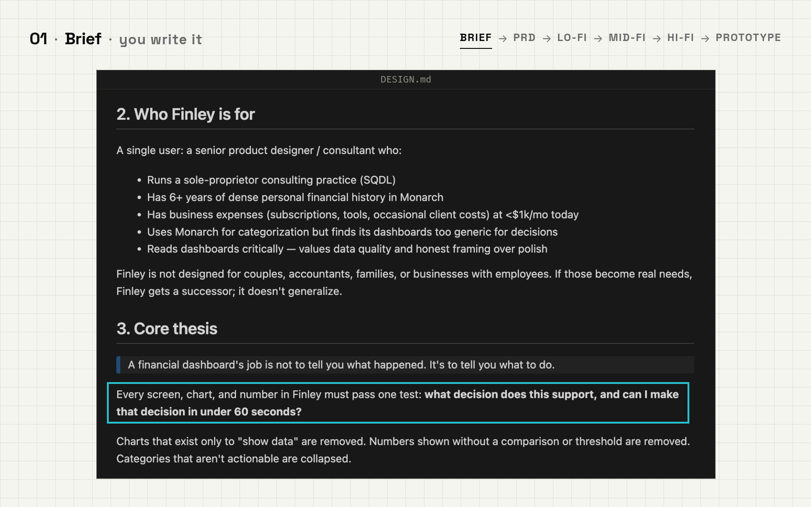
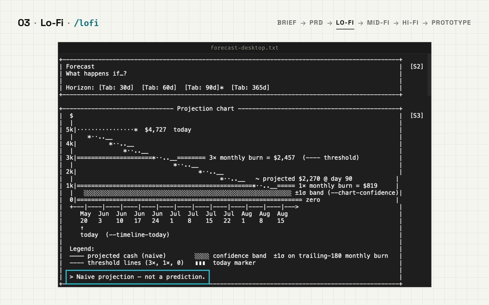

From a one-page brief
One page.
Six stages.
A prototype you can click.
Design agents. A trail you can review.
The brief, built
AI Product Design
github.com/luiscielak/ai-product-design-rules
Skills for any AI coding system · sample data
Brief
PRD
Lo-fi
Mid-fi
Hi-fi
Prototype